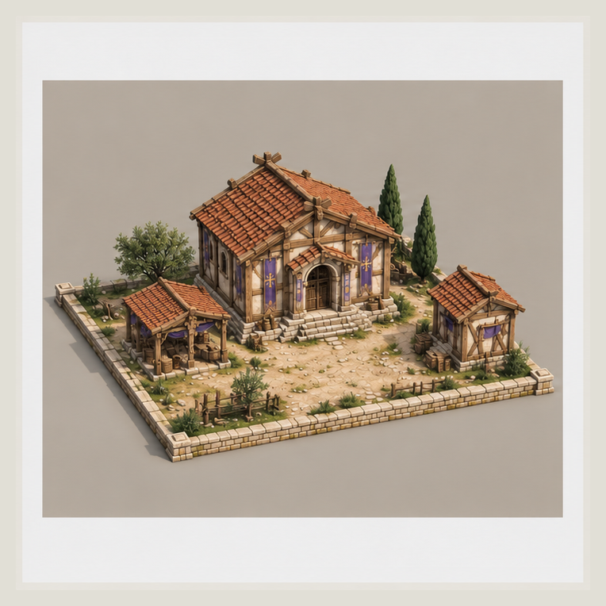
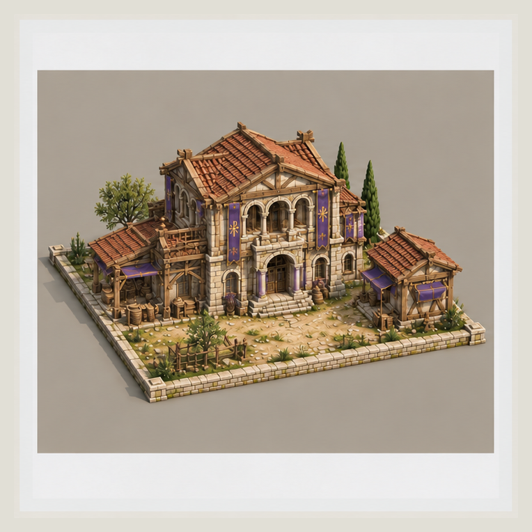
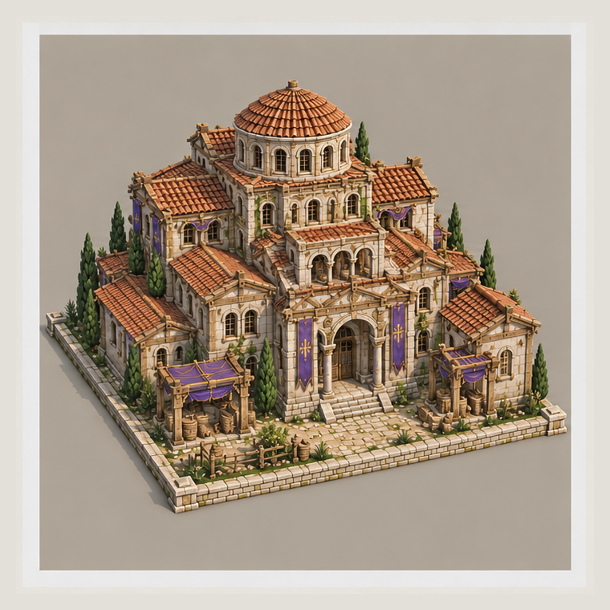
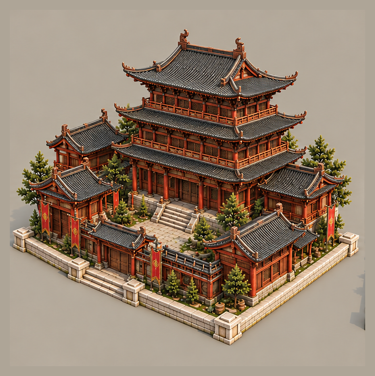

普通建筑和士兵保留原暖色稿，窗灯不改。 时代一、二延续已认可布局并恢复暖材质；时代三提升中央建筑高度与气势。天朝以高级木构为主，石材限于基座、台阶与铺地。 三时代暂定相同5×5占地，不整体拉大门窗或小房子。日光、Blender和Unity本轮未改。
每个主基地三个独立图片；给Tripo使用角度链接中的PNG，不上传本页拼排。二维AI概念并非精确建筑测绘，跨视角细节仍需建模校正。

前斜视 (764×764) · 侧面 (764×764) · 后斜视 (764×764)


前斜视 (764×764) · 侧面 (764×764) · 后斜视 (763×764)

前斜视 (763×765) · 侧面 (1254×1254) · 后斜视 (763×765)